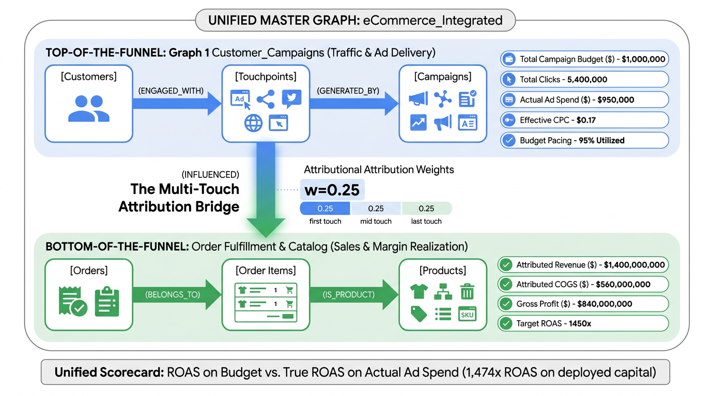

1. Introduction
In this codelab, you will learn how to leverage BigQuery Graph and Gemini Enterprise Conversational Analytics to solve modern marketing attribution and Return on Ad Spend (ROAS) challenges.
In retail and e-commerce, customer purchase paths are highly non-linear. A buyer might discover a product via TikTok, reconsider through Instagram Retargeting, search on Google, and finally complete checkout after receiving an abandoned cart email. Traditional relational data warehouses struggle with such multi-hop queries, requiring 6-way joins that are difficult to write and suffer from severe Cartesian join inflation.

Figure 1: Unified BigQuery Marketing Attribution Graph Architecture & Full-Funnel Metric Flow.
With BigQuery Graph, we model these relationships natively without data copying using a single, unified enterprise property graph:
eCommerce_Integrated: The master 6-entity unified property graph spanning Marketing Campaigns, Touchpoints, Customers, Orders, Line Items, and Products with pre-aggregated semantic measures.
By leveraging BigQuery's start_node parameter in GRAPH_EXPAND, this single graph powers both:
- Dimensional BI Rollups:
GRAPH_EXPAND(..., start_node => "touchpoints")andAGG()for fast relational SQL rollups compatible with Looker, Tableau, and PowerBI. - Deep Network Traversals:
GRAPH_TABLEand pure ISO GQL for multi-hop customer journeys, net profit ROAS, and merchandise influence.
🎯 Core Learning Objectives & Milestones
- Unified Property Graph Modeling: Construct the 6-entity master graph
eCommerce_Integrateddirectly over BigQuery tables without data duplication or maintaining separate siloed graphs. - Semantic Measures (
MEASURE(...)): Embed standardized pre-aggregated metrics (total_campaign_budget,total_ad_spend,gross_revenue,total_cogs,total_reach) directly into Node tables to eliminate Cartesian join double-counting. - Dimensional BI Rollups with
GRAPH_EXPAND: UseGRAPH_EXPAND(..., start_node => "touchpoints")andAGG()to safely roll up campaign spend and budgets using standard SQL syntax. - Multi-Hop Traversals with
GRAPH_TABLE& ISO GQL: Run native ISO GQL pattern matches to trace multi-touch customer journeys and calculate profit-adjusted ROAS. - Unified Single-Graph Dual Paradigm & AI Copilot: Fuse
GRAPH_EXPANDandGRAPH_TABLEon the same single graph in a single GoogleSQL CTE query, then deploy a Conversational Analytics Data Agent to Gemini Enterprise.
What you'll need
- A Google Cloud Project with billing enabled.
- Access to Google Cloud Shell or BigQuery Studio.
- Access to Gemini Enterprise.
Cost Estimate
This codelab uses BigQuery Enterprise autoscaling edition (0 baseline slots, scaled up on demand during query execution). Total lab costs are estimated to be less than $5 USD.
2. Setup and Requirements
In this step, you will configure your Cloud Shell environment and create an autoscaling BigQuery Enterprise reservation.
Set up Environment Variables
export PROJECT_ID=$(gcloud config get-value project)
export REGION="US"
export RESERVATION_NAME="marketing-graph-reservation"
echo "Project ID: ${PROJECT_ID}"Enable Required Google Cloud APIs
gcloud services enable \
bigquery.googleapis.com \
bigqueryreservation.googleapis.com \
discoveryengine.googleapis.comCreate BigQuery Enterprise Reservation & Assignment
BigQuery Graph features using ISO GQL (GRAPH ... MATCH and GRAPH_TABLE) require an Enterprise or Enterprise Plus reservation. Configure a serverless autoscaling reservation with 0 baseline slots so compute costs remain zero when idle:
# 1. Create BigQuery Enterprise reservation (0 baseline, 100 max autoscaling slots)
bq mk --reservation \
--project_id=${PROJECT_ID} \
--location=${REGION} \
--edition=ENTERPRISE \
--slots=0 \
--autoscale_max_slots=100 \
--ignore_idle_slots=true \
${RESERVATION_NAME}
# 2. Assign project to reservation for query execution
bq mk --reservation_assignment \
--project_id=${PROJECT_ID} \
--location=${REGION} \
--reservation_id=${RESERVATION_NAME} \
--job_type=QUERY \
--assignee_type=PROJECT \
--assignee_id=${PROJECT_ID}GRAPH_EXPAND (Step 10) also runs on standard On-Demand pricing without requiring an Enterprise reservation!
3. Creating Schema & Tables
In this step, you will create the dataset eRetail_marketing and the 7 underlying relational tables representing the marketing and e-commerce ecosystem.
-- 1. Create Dataset
CREATE SCHEMA IF NOT EXISTS `eRetail_marketing` OPTIONS(location='US');
-- 2. Campaigns Table (Marketing Ad Campaigns)
CREATE OR REPLACE TABLE `eRetail_marketing.campaigns` (
campaign_id STRING,
campaign_name STRING,
channel STRING,
weekly_budget NUMERIC,
target_roas FLOAT64
);
-- 3. Customers Table (E-commerce Shoppers)
CREATE OR REPLACE TABLE `eRetail_marketing.customers` (
customer_id STRING,
customer_segment STRING,
signup_date DATE
);
-- 4. Touchpoints Table (Marketing Ad Clicks / Impressions)
CREATE OR REPLACE TABLE `eRetail_marketing.touchpoints` (
touchpoint_id STRING,
customer_id STRING,
campaign_id STRING,
touchpoint_timestamp TIMESTAMP,
device_type STRING,
cpc_cost NUMERIC
);
-- 5. Orders Table (E-commerce Transactions)
CREATE OR REPLACE TABLE `eRetail_marketing.orders` (
order_id STRING,
customer_id STRING,
order_timestamp TIMESTAMP,
order_status STRING,
shipping_cost NUMERIC
);
-- 6. Products Table (Merchandise Catalog)
CREATE OR REPLACE TABLE `eRetail_marketing.products` (
product_id STRING,
product_name STRING,
category STRING,
cost_of_goods NUMERIC,
retail_price NUMERIC
);
-- 7. Order Items Table (Transaction Line Items)
CREATE OR REPLACE TABLE `eRetail_marketing.order_items` (
order_item_id STRING,
order_id STRING,
product_id STRING,
sale_price NUMERIC,
discount_amount NUMERIC,
cost_of_goods NUMERIC,
refund_amount NUMERIC,
item_status STRING
);
-- 8. Influenced Edge Table (Attribution Bridge Table)
CREATE OR REPLACE TABLE `eRetail_marketing.edge_influenced` (
touchpoint_id STRING,
order_id STRING,
attribution_weight FLOAT64,
touchpoint_rank INT64,
days_to_convert FLOAT64
);4. Loading Sample Data
In this step, you will populate the 7 tables with a realistic retail marketing attribution dataset containing:
- 8 Campaigns: Paid Search, Paid Social, Affiliate Blogs, and Email Marketing.
- 8 Products: Hardware catalog across Audio, Accessories, and Displays.
- 1,000 Customers: New, Returning, and High-Value VIP shoppers.
- 5,000 Touchpoints: Marketing interactions across Mobile, Desktop, and Tablet.
- 800 Orders & 1,544 Order Items: Realistic e-commerce sales.
- 1,728 Influenced Edges: Position-based multi-touch attribution connections with weights and days-to-convert.
How to Load the Sample Data
You can load this sample dataset into BigQuery using any of the following three methods:
Method A: 1-Click in BigQuery Studio (Recommended)
Click the Copy button below and paste the SQL directly into a new BigQuery Studio query tab, then click Run. BigQuery will load all 7 tables in parallel directly from the publicly accessible Google Cloud Storage bucket (gs://marketing_attribution/data/*.csv) without downloading any files locally:
-- 1. Load Campaigns
LOAD DATA OVERWRITE `eRetail_marketing.campaigns`
(
campaign_id STRING,
campaign_name STRING,
channel STRING,
weekly_budget NUMERIC,
target_roas FLOAT64
)
FROM FILES (
format = 'CSV',
uris = ['gs://marketing_attribution/data/campaigns.csv'],
skip_leading_rows = 1
);
-- 2. Load Products Catalog
LOAD DATA OVERWRITE `eRetail_marketing.products`
(
product_id STRING,
product_name STRING,
category STRING,
cost_of_goods NUMERIC,
retail_price NUMERIC
)
FROM FILES (
format = 'CSV',
uris = ['gs://marketing_attribution/data/products.csv'],
skip_leading_rows = 1
);
-- 3. Load Customers
LOAD DATA OVERWRITE `eRetail_marketing.customers`
(
customer_id STRING,
first_seen_date DATE,
customer_segment STRING
)
FROM FILES (
format = 'CSV',
uris = ['gs://marketing_attribution/data/customers.csv'],
skip_leading_rows = 1
);
-- 4. Load Touchpoints (5,000 Ad Clicks & Digital Interactions)
LOAD DATA OVERWRITE `eRetail_marketing.touchpoints`
(
touchpoint_id STRING,
customer_id STRING,
campaign_id STRING,
touchpoint_timestamp TIMESTAMP,
cpc_cost NUMERIC,
device_type STRING
)
FROM FILES (
format = 'CSV',
uris = ['gs://marketing_attribution/data/touchpoints.csv'],
skip_leading_rows = 1
);
-- 5. Load Orders (E-commerce Transactions)
LOAD DATA OVERWRITE `eRetail_marketing.orders`
(
order_id STRING,
customer_id STRING,
order_timestamp TIMESTAMP,
order_status STRING,
shipping_cost NUMERIC
)
FROM FILES (
format = 'CSV',
uris = ['gs://marketing_attribution/data/orders.csv'],
skip_leading_rows = 1
);
-- 6. Load Order Items (Transaction Line Items)
LOAD DATA OVERWRITE `eRetail_marketing.order_items`
(
order_item_id STRING,
order_id STRING,
product_id STRING,
sale_price NUMERIC,
discount_amount NUMERIC,
refund_amount NUMERIC,
cost_of_goods NUMERIC,
item_status STRING
)
FROM FILES (
format = 'CSV',
uris = ['gs://marketing_attribution/data/order_items.csv'],
skip_leading_rows = 1
);
-- 7. Load Influenced Edge (Attribution Weights & Conversion Paths)
LOAD DATA OVERWRITE `eRetail_marketing.edge_influenced`
(
touchpoint_id STRING,
order_id STRING,
attribution_weight FLOAT64,
touchpoint_rank INT64,
days_to_convert FLOAT64
)
FROM FILES (
format = 'CSV',
uris = ['gs://marketing_attribution/data/edge_influenced.csv'],
skip_leading_rows = 1
);Method B: Run from Cloud Shell / Terminal
If you cloned the repository or are working in Cloud Shell, you can execute the pre-packaged script sql/02_load_sample_data.sql directly via the bq CLI:
bq query --use_legacy_sql=false < sql/02_load_sample_data.sqlMethod C: Load from Local CSV Files in data/
If you are working in an offline environment, all 7 CSV files are stored locally in the data/ folder. You can load them using bq load:
for table in campaigns products customers touchpoints orders order_items edge_influenced; do
bq load --source_format=CSV --skip_leading_rows=1 eRetail_marketing.${table} data/${table}.csv
doneVerify Loaded Data
Confirm that all 7 tables have been successfully populated:
SELECT table_id, row_count, size_bytes
FROM `eRetail_marketing.__TABLES__`
ORDER BY table_id;| Table ID | Row Count | Description |
|---|---|---|
campaigns | 8 | 8 Marketing ad campaigns across 4 channels |
products | 8 | E-commerce merchandise catalog |
customers | 1,000 | Unique shoppers across 3 customer segments |
touchpoints | 5,000 | Marketing touches (clicks, impressions) |
orders | 800 | Completed customer checkout transactions |
order_items | 1,544 | Individual merchandise line items purchased |
edge_influenced | 1,728 | Multi-touch attribution links |
5. Defining the Unified Property Graph & Semantic Measures
Rather than duplicating data into external databases or maintaining separate graphs, BigQuery Property Graph maps directly to your physical tables. In this step, we create a single, unified enterprise property graph:
eCommerce_Integrated encompasses all 6 tables and 5 edge relationships with pre-aggregated semantic measures. By utilizing start_node => "touchpoints" in GRAPH_EXPAND, we extract the marketing hierarchy on demand, while GRAPH_TABLE and pure ISO GQL traverse the complete multi-hop mesh.
Figure 2: Unified Enterprise Property Graph Architecture: eCommerce_Integrated enclosing all 6 entities and semantic measures.
CREATE OR REPLACE PROPERTY GRAPH `eRetail_marketing.eCommerce_Integrated`
NODE TABLES (
`eRetail_marketing.campaigns` AS campaigns
KEY (campaign_id)
LABEL campaigns PROPERTIES (
campaign_id, campaign_name, channel, weekly_budget, target_roas,
MEASURE(SUM(weekly_budget)) AS total_campaign_budget
),
`eRetail_marketing.touchpoints` AS touchpoints
KEY (touchpoint_id)
LABEL touchpoints PROPERTIES (
touchpoint_id, customer_id, campaign_id, cpc_cost, device_type,
MEASURE(SUM(cpc_cost)) AS total_ad_spend,
MEASURE(COUNT(touchpoint_id)) AS total_clicks
),
`eRetail_marketing.customers` AS customers
KEY (customer_id)
LABEL customers PROPERTIES (
customer_id, customer_segment,
MEASURE(COUNT(DISTINCT customer_id)) AS total_reach
),
`eRetail_marketing.orders` AS orders
KEY (order_id)
LABEL orders PROPERTIES (
order_id, order_status, shipping_cost,
MEASURE(COUNT(order_id)) AS total_orders
),
`eRetail_marketing.order_items` AS order_items
KEY (order_item_id)
LABEL order_items PROPERTIES (
order_item_id, product_id, order_id, sale_price, discount_amount, cost_of_goods, refund_amount, item_status,
sale_price - discount_amount AS net_revenue,
MEASURE(SUM(net_revenue)) AS gross_revenue,
MEASURE(SUM(cost_of_goods)) AS total_cogs,
MEASURE(SUM(refund_amount)) AS total_refunds
),
`eRetail_marketing.products` AS products
KEY (product_id)
LABEL products PROPERTIES (
product_id, product_name, category, cost_of_goods, retail_price
)
)
EDGE TABLES (
`eRetail_marketing.touchpoints` AS generated_by
KEY (touchpoint_id)
SOURCE KEY (touchpoint_id) REFERENCES touchpoints (touchpoint_id)
DESTINATION KEY (campaign_id) REFERENCES campaigns (campaign_id)
LABEL GENERATED_BY NO PROPERTIES,
`eRetail_marketing.touchpoints` AS engaged_with
KEY (touchpoint_id)
SOURCE KEY (customer_id) REFERENCES customers (customer_id)
DESTINATION KEY (touchpoint_id) REFERENCES touchpoints (touchpoint_id)
LABEL ENGAGED_WITH NO PROPERTIES,
`eRetail_marketing.edge_influenced` AS edge_influenced
KEY (touchpoint_id, order_id)
SOURCE KEY (touchpoint_id) REFERENCES touchpoints (touchpoint_id)
DESTINATION KEY (order_id) REFERENCES orders (order_id)
LABEL INFLUENCED PROPERTIES (
attribution_weight, touchpoint_rank, days_to_convert
),
`eRetail_marketing.order_items` AS item_belongs_to_order
KEY (order_item_id)
SOURCE KEY (order_item_id) REFERENCES order_items (order_item_id)
DESTINATION KEY (order_id) REFERENCES orders (order_id)
LABEL BELONGS_TO NO PROPERTIES,
`eRetail_marketing.order_items` AS item_is_product
KEY (order_item_id)
SOURCE KEY (order_item_id) REFERENCES order_items (order_item_id)
DESTINATION KEY (product_id) REFERENCES products (product_id)
LABEL IS_PRODUCT NO PROPERTIES
);6. Inspecting Graph Schema, Semantic Measures & Paths
MEASURE(...) expressions into first-class typed properties on node entities. Then, benchmark relational SQL joins against graph measures to understand join explosion and see when to declare measures vs. raw aggregations.
1. Inspect Declared Measures via INFORMATION_SCHEMA
Because measures are registered within the Property Graph schema rather than on physical tables, they are cataloged under INFORMATION_SCHEMA.PROPERTY_GRAPHS. We can query its metadata to inspect all declared measures, their aggregation formulas, and their synthesized measure types:
SELECT
JSON_VALUE(node_table_json, "$.name") AS node_table_name,
JSON_VALUE(prop_json, "$.name") AS measure_name,
JSON_VALUE(prop_json, "$.expression") AS measure_expression,
CONCAT("MEASURE<", JSON_VALUE(prop_json, "$.dataType.typeKind"), ">") AS measure_type
FROM `eRetail_marketing.INFORMATION_SCHEMA.PROPERTY_GRAPHS`,
UNNEST(JSON_EXTRACT_ARRAY(property_graph_metadata_json, "$.nodeTables")) AS node_table_json,
UNNEST(JSON_EXTRACT_ARRAY(node_table_json, "$.labelAndProperties[0].properties")) AS prop_json
WHERE JSON_VALUE(prop_json, "$.expressionKind") = "MEASURE"
ORDER BY node_table_name, measure_name;| node_table_name | measure_name | measure_expression | measure_type |
|---|---|---|---|
campaigns | total_campaign_budget | SUM(weekly_budget) | MEASURE<NUMERIC> |
customers | total_reach | COUNT(DISTINCT customer_id) | MEASURE<INT64> |
order_items | gross_revenue | SUM(net_revenue) | MEASURE<NUMERIC> |
order_items | total_cogs | SUM(cost_of_goods) | MEASURE<NUMERIC> |
order_items | total_refunds | SUM(refund_amount) | MEASURE<NUMERIC> |
orders | total_orders | COUNT(order_id) | MEASURE<INT64> |
touchpoints | total_ad_spend | SUM(cpc_cost) | MEASURE<NUMERIC> |
touchpoints | total_clicks | COUNT(touchpoint_id) | MEASURE<INT64> |
2. Verify Baseline Measures: Why Relational Joins Double-Count vs. BigQuery Measures
To understand why BigQuery Measures are transformative, observe what happens when we attempt to compute marketing budgets and click counts across a 1-hop relationship using standard SQL joins versus GRAPH_EXPAND + AGG().
Query A: Naive Relational Join Demonstrating Double Counting
In standard relational SQL, joining campaigns (1) to touchpoints (N) causes weekly_budget to duplicate for every single click:
SELECT
c.channel,
c.campaign_name,
SUM(c.weekly_budget) AS exploded_budget,
COUNT(tp.touchpoint_id) AS total_clicks,
ROUND(SUM(tp.cpc_cost), 2) AS total_spend
FROM `eRetail_marketing.campaigns` c
JOIN `eRetail_marketing.touchpoints` tp ON c.campaign_id = tp.campaign_id
GROUP BY c.channel, c.campaign_name
ORDER BY exploded_budget DESC;Query B: Graph Expand + AGG() Deduplicates Automatically
By declaring MEASURE(SUM(weekly_budget)) in the Property Graph DDL, BigQuery tracks the entity grain and aggregates the budget only once per campaign, regardless of fan-out:
SELECT
campaigns_channel AS channel,
campaigns_campaign_name AS campaign_name,
AGG(campaigns_total_campaign_budget) AS exact_budget,
AGG(touchpoints_total_clicks) AS total_clicks,
ROUND(AGG(touchpoints_total_ad_spend), 2) AS exact_spend
FROM GRAPH_EXPAND("eRetail_marketing.eCommerce_Integrated", start_node => "touchpoints")
GROUP BY campaigns_channel, campaigns_campaign_name
ORDER BY exact_budget DESC;Side-by-Side Comparison:
| Channel | Campaign Name | Exploded Budget (SQL Join) | Exact Budget (GRAPH_EXPAND) | Total Clicks | Duplication Factor |
|---|---|---|---|---|---|
| Paid Social | Q4_TikTok_Prospecting_GenZ | $3,256,000 | $5,500 | 592 | 592x |
| Paid Search | Q4_Search_Generic_Audio | $2,713,500 | $4,500 | 603 | 603x |
| Paid Social | Q4_Meta_IG_Retargeting | $2,535,000 | $3,750 | 676 | 676x |
| Paid Search | Q4_Search_Brand_Electronics | $1,947,000 | $3,000 | 649 | 649x |
weekly_budget is multiplied by the number of touchpoint rows (up to 676x!). GRAPH_EXPAND + AGG() preserves the exact entity grain of campaigns and automatically sums weekly_budget once per campaign.
3. Multi-Hop Cartesian Join Explosion: Full-Funnel Double-Counting
What happens when an analyst needs to calculate multi-touch marketing attribution across a 5-hop path from campaigns → touchpoints → edge_influenced → orders → order_items?
Query C: Naive Relational 5-Hop Join Explodes Everything
In relational SQL, joining 5 tables with varying 1:N cardinalities causes an astronomical Cartesian explosion:
- Budget explodes by over 40,000% (multiplied by touchpoints × order items).
- Revenue explodes by over 120% because order items are duplicated across multiple influencing touchpoints!
Query D: The BigQuery Measures + Graph Table Solution
To solve this cleanly, combine GRAPH_EXPAND (for upstream node measures) with GRAPH_TABLE (for multi-hop path traversals):
WITH campaign_measures AS (
-- 1. Extract non-exploded campaign budget and ad spend via GRAPH_EXPAND
SELECT
campaigns_campaign_name AS campaign_name,
campaigns_channel AS channel,
AGG(campaigns_total_campaign_budget) AS exact_budget,
ROUND(AGG(touchpoints_total_ad_spend), 2) AS exact_ad_spend,
AGG(touchpoints_total_clicks) AS total_clicks
FROM GRAPH_EXPAND("eRetail_marketing.eCommerce_Integrated", start_node => "touchpoints")
GROUP BY campaigns_campaign_name, campaigns_channel
),
attributed_orders AS (
-- 2. Traverse the 5-hop funnel in GRAPH_TABLE and calculate weighted revenue at the leaf grain
SELECT
campaign_name,
ROUND(SUM(CAST(net_revenue AS FLOAT64) * attribution_weight), 2) AS exact_attributed_revenue
FROM GRAPH_TABLE(
`eRetail_marketing.eCommerce_Integrated`
MATCH (c:campaigns)<-[g:GENERATED_BY]-(tp:touchpoints)
-[i:INFLUENCED]->(o:orders)
<-[b:BELONGS_TO]-(oi:order_items)
COLUMNS (
c.campaign_name AS campaign_name,
oi.net_revenue AS net_revenue,
i.attribution_weight AS attribution_weight
)
)
GROUP BY campaign_name
)
-- 3. Fuse both views to calculate exact, uncorrupted True ROAS
SELECT
cm.channel,
cm.campaign_name,
cm.exact_budget,
cm.exact_ad_spend,
cm.total_clicks,
ao.exact_attributed_revenue,
ROUND(ao.exact_attributed_revenue / NULLIF(cm.exact_ad_spend, 0), 2) AS exact_roas
FROM campaign_measures cm
JOIN attributed_orders ao ON cm.campaign_name = ao.campaign_name
ORDER BY exact_roas DESC;4. Architectural Decision Guide: When to Declare Measures vs. When to Use Raw Aggregations
A central architectural question for data engineers is: "When should I declare a MEASURE(...) on the Property Graph, and when should I use raw aggregations like SUM() inside GRAPH_TABLE?"
| Scenario | Recommended Approach | Why? | Example |
|---|---|---|---|
| Upstream Entity Metrics (1:N Fan-Out) |
Declare MEASURE(...) + GRAPH_EXPAND |
Avoids Cartesian multiplication when joining child entities (e.g. clicks under a campaign). BigQuery tracks the entity grain and aggregates once per parent entity. | campaigns.weekly_budgettouchpoints.cpc_costcustomers.total_reach |
| Finest Leaf-Grain Metrics with Normalized Weights | Raw SUM() in GRAPH_TABLE |
The properties reside at the terminal leaf grain of the traversal, and weights sum to 1.0 (Σ wi = 1.0), guaranteeing mathematical integrity without double-counting. | SUM(net_revenue * attribution_weight) across order items and influence edges |
Any Query Tempted to Use ANY_VALUE(col) |
🚨 Refactor to MEASURE(...) + CTE |
Using ANY_VALUE() inside GRAPH_TABLE is a clear warning sign of duplicated parent attributes across path rows. It silently produces incorrect results when grouping by higher-level dimensions (such as channel). |
Never use ANY_VALUE(budget)—extract budget via GRAPH_EXPAND in a CTE instead! |
GRAPH_TABLE (like Query D's SUM(net_revenue * attribution_weight)) work only because order_items sits at the terminal leaf grain of the graph and attribution_weight mathematically partitions each order's value (Σ wi = 1.0). If order_items had child records (like shipments) or unweighted paths, raw SUM() would silently double-count. Whenever you need upstream entity metrics, always declare them as MEASURE properties and extract them via GRAPH_EXPAND.
5. Inspect Graph Paths Visually (JSON Graph Object)
You can serialize entire graph subpaths to JSON in pure ISO GQL for visual inspection and debugging:
GRAPH `eRetail_marketing.eCommerce_Integrated`
MATCH (c:campaigns)<-[g:GENERATED_BY]-(tp:touchpoints)-[i:INFLUENCED]->(o:orders),
(cust:customers WHERE cust.customer_id = 'CUST_0888')-[e:ENGAGED_WITH]->(tp)
RETURN
TO_JSON(cust) AS customer,
TO_JSON(e) AS edge_engaged,
TO_JSON(tp) AS touchpoint,
TO_JSON(g) AS edge_generated,
TO_JSON(c) AS campaign,
TO_JSON(i) AS edge_influenced,
TO_JSON(o) AS orders
LIMIT 5;7. Use Case 1: Campaign Budget vs. Actual Ad Spend Rollup (GRAPH_EXPAND)
Scenario: Right after defining baseline measures in the Property Graph, marketing analysts and BI developers need to build Looker Studio and Tableau dashboards that roll up campaign budgets, click volumes, and ad spend. They need queries that:
- Use standard SQL syntax (
SELECT ... FROM ... GROUP BY) compatible with existing BI tools without writing GQLMATCH (...)syntax. - Prevent Cartesian budget duplication across thousands of touchpoints without complex subqueries.
SELECT
campaigns_channel AS channel,
campaigns_campaign_name AS campaign_name,
AGG(campaigns_total_campaign_budget) AS total_budget,
AGG(touchpoints_total_clicks) AS total_clicks,
ROUND(AGG(touchpoints_total_ad_spend), 2) AS total_ad_spend,
ROUND(AGG(campaigns_total_campaign_budget) - AGG(touchpoints_total_ad_spend), 2) AS remaining_budget,
ROUND(AGG(touchpoints_total_ad_spend) / NULLIF(AGG(touchpoints_total_clicks), 0), 2) AS effective_avg_cpc
FROM GRAPH_EXPAND("eRetail_marketing.eCommerce_Integrated", start_node => "touchpoints")
GROUP BY channel, campaign_name
ORDER BY total_ad_spend DESC;| channel | campaign_name | total_budget | total_clicks | total_ad_spend | remaining_budget | effective_avg_cpc |
|---|---|---|---|---|---|---|
| Paid Search | Q4_Search_Generic_Audio | $4,500 | 603 | $2,277.97 | $2,222.03 | $3.78 |
| Paid Search | Q4_Search_Brand_Electronics | $3,000 | 649 | $1,711.55 | $1,288.45 | $2.64 |
| Paid Social | Q4_Meta_IG_Retargeting | $3,750 | 676 | $1,251.24 | $2,498.76 | $1.85 |
| Affiliate | Q4_Affiliate_TechReview_Blogs | $2,000 | 651 | $1,058.11 | $941.89 | $1.63 |
| Paid Social | Q4_TikTok_Prospecting_GenZ | $5,500 | 592 | $588.63 | $4,911.37 | $0.99 |
| Affiliate | Q4_Affiliate_Coupon_Sites | $1,500 | 586 | $382.82 | $1,117.18 | $0.65 |
| Email Marketing | Q4_Email_Cart_Abandonment | $625 | 656 | $81.45 | $543.55 | $0.12 |
| Email Marketing | Q4_Email_VIP_Weekly_Drop | $875 | 587 | $57.72 | $817.28 | $0.10 |
total_budget ($4,500, $3,000, etc.) did not multiply across the 600+ clicks. GRAPH_EXPAND(..., start_node => "touchpoints") + AGG() flattens the hierarchy and aggregates each declared measure at its correct entity grain directly from the unified master graph eCommerce_Integrated.
8. Use Case 2: Multi-Touch Customer Journey
Scenario: Trace customer CUST_0888's sequence of digital touchpoints across Paid Search, Social, and Email leading to orders ORD_0002 and ORD_0486 using pure ISO GQL on eCommerce_Integrated.
GRAPH `eRetail_marketing.eCommerce_Integrated`
MATCH (c:campaigns)
<-[g:GENERATED_BY]-(tp:touchpoints)
-[i:INFLUENCED]->(o:orders),
(cust:customers WHERE cust.customer_id = 'CUST_0888')
-[e:ENGAGED_WITH]->(tp)
RETURN
cust.customer_id,
c.campaign_name,
c.channel,
tp.touchpoint_id,
tp.device_type,
tp.cpc_cost,
i.attribution_weight,
i.touchpoint_rank,
o.order_id
ORDER BY o.order_id, i.touchpoint_rank;| Customer | Campaign | Channel | Device | CPC | Weight | Rank | Order |
|---|---|---|---|---|---|---|---|
| CUST_0888 | Q4_Email_Cart_Abandonment | Email Marketing | Mobile | $0.18 | 0.25 | 1 | ORD_0002 |
| CUST_0888 | Q4_Meta_IG_Retargeting | Paid Social | Mobile | $1.65 | 0.25 | 2 | ORD_0002 |
| CUST_0888 | Q4_Email_Cart_Abandonment | Email Marketing | Desktop | $0.16 | 0.25 | 3 | ORD_0002 |
| CUST_0888 | Q4_TikTok_Prospecting_GenZ | Paid Social | Desktop | $0.98 | 0.25 | 4 | ORD_0002 |
| CUST_0888 | Q4_Search_Generic_Audio | Paid Search | Mobile | $4.72 | 0.50 | 1 | ORD_0486 |
| CUST_0888 | Q4_Search_Generic_Audio | Paid Search | Mobile | $4.83 | 0.50 | 2 | ORD_0486 |
9. Use Case 3: Campaign Profit Contribution & Margin Analysis (GRAPH_TABLE)
Scenario: Calculate true attributed gross profit and profit margin percentage across campaigns by deducting Cost of Goods Sold (COGS) from attributed gross revenue using GRAPH_TABLE on eCommerce_Integrated:
net_revenue and cost_of_goods sit at order_items (the finest leaf grain) and each order's attribution weights sum to 1.0 (Σ wi = 1.0), raw SUM() accurately calculates profit contribution without double-counting. Upstream campaign budgets and ad spend are cleanly joined via GRAPH_EXPAND in Use Case 5.
net_revenue and cost_of_goods reside at order_items—the finest leaf grain of the graph—and each order's revenue is partitioned by normalized weights (Σ attribution_weight = 1.0). Therefore, raw SUM() accurately computes financial contribution without double-counting.
We intentionally avoid querying coarse parent metrics like
weekly_budget here: doing so would tempt the use of ANY_VALUE(budget), which breaks when aggregating across channels. Upstream budget and ad spend metrics are cleanly joined using GRAPH_EXPAND in Use Case 5!
SELECT
channel,
campaign_name,
ROUND(SUM(CAST(net_revenue AS FLOAT64) * attribution_weight), 2) AS total_attributed_revenue,
ROUND(SUM(CAST(cost_of_goods AS FLOAT64) * attribution_weight), 2) AS total_attributed_cogs,
ROUND(SUM(CAST(net_revenue AS FLOAT64) * attribution_weight) - SUM(CAST(cost_of_goods AS FLOAT64) * attribution_weight), 2) AS gross_profit,
ROUND(SAFE_DIVIDE(
SUM(CAST(net_revenue AS FLOAT64) * attribution_weight) - SUM(CAST(cost_of_goods AS FLOAT64) * attribution_weight),
SUM(CAST(net_revenue AS FLOAT64) * attribution_weight)
) * 100, 1) AS gross_margin_pct
FROM GRAPH_TABLE(
`eRetail_marketing.eCommerce_Integrated`
MATCH (c:campaigns)
<-[g:GENERATED_BY]-(tp:touchpoints)
-[i:INFLUENCED]->(o:orders)
<-[b:BELONGS_TO]-(oi:order_items)
-[p:IS_PRODUCT]->(prod:products)
COLUMNS (
c.campaign_name AS campaign_name,
c.channel AS channel,
oi.net_revenue AS net_revenue,
oi.cost_of_goods AS cost_of_goods,
i.attribution_weight AS attribution_weight
)
)
GROUP BY channel, campaign_name
ORDER BY gross_profit DESC;| Channel | Campaign Name | Attributed Revenue | Attributed COGS | Gross Profit | Gross Margin % |
|---|---|---|---|---|---|
| Affiliate | Q4_Affiliate_TechReview_Blogs | $87,625.08 | $42,120.47 | $45,504.61 | 51.9% |
| Email Marketing | Q4_Email_VIP_Weekly_Drop | $85,119.09 | $40,630.23 | $44,488.86 | 52.3% |
| Email Marketing | Q4_Email_Cart_Abandonment | $79,468.16 | $38,059.91 | $41,408.24 | 52.1% |
| Paid Search | Q4_Search_Brand_Electronics | $79,053.28 | $38,163.13 | $40,890.15 | 51.7% |
| Paid Social | Q4_TikTok_Prospecting_GenZ | $75,214.12 | $36,473.98 | $38,740.15 | 51.5% |
| Paid Social | Q4_Meta_IG_Retargeting | $73,340.26 | $34,984.20 | $38,356.06 | 52.3% |
| Paid Search | Q4_Search_Generic_Audio | $69,880.90 | $33,826.43 | $36,054.46 | 51.6% |
| Affiliate | Q4_Affiliate_Coupon_Sites | $60,884.49 | $29,480.02 | $31,404.46 | 51.6% |
10. Use Case 4: Product-Level Campaign Influence & Category Affinity
Scenario: Discover which marketing channels drive conversions for specific merchandise categories (Audio, Accessories, Monitors) across 5 graph hops in eCommerce_Integrated:
SELECT
category AS product_category,
product_name,
channel AS marketing_channel,
campaign_name,
COUNT(DISTINCT order_id) AS orders_count,
ROUND(SUM(CAST(net_revenue AS FLOAT64) * attribution_weight), 2) AS attributed_sales,
ROUND(AVG(days_to_convert), 1) AS avg_days_to_convert
FROM GRAPH_TABLE(
`eRetail_marketing.eCommerce_Integrated`
MATCH (c:campaigns)
<-[g:GENERATED_BY]-(tp:touchpoints)
-[i:INFLUENCED]->(o:orders)
<-[b:BELONGS_TO]-(oi:order_items)
-[p:IS_PRODUCT]->(prod:products)
COLUMNS (
c.campaign_name AS campaign_name,
c.channel AS channel,
prod.category AS category,
prod.product_name AS product_name,
o.order_id AS order_id,
oi.net_revenue AS net_revenue,
i.attribution_weight AS attribution_weight,
i.days_to_convert AS days_to_convert
)
)
GROUP BY category, product_name, channel, campaign_name
ORDER BY category, attributed_sales DESC
LIMIT 10;11. Use Case 5: Unified Executive ROAS Scorecard (Dual Views on a Single Graph)
Scenario: Fuse top-of-funnel marketing measures (safe budgets & spend via GRAPH_EXPAND with start_node => "touchpoints") with bottom-of-funnel profit attribution (via GRAPH_TABLE) from the single master graph eCommerce_Integrated to calculate True ROAS on Actual Ad Spend vs. ROAS on Budget in a single GoogleSQL CTE query:
WITH marketing_funnel AS (
-- 1. Top-of-funnel marketing metrics from eCommerce_Integrated via GRAPH_EXPAND
SELECT
campaigns_channel AS channel,
campaigns_campaign_name AS campaign_name,
AGG(campaigns_total_campaign_budget) AS budget,
AGG(touchpoints_total_clicks) AS clicks,
ROUND(AGG(touchpoints_total_ad_spend), 2) AS ad_spend
FROM GRAPH_EXPAND("eRetail_marketing.eCommerce_Integrated", start_node => "touchpoints")
GROUP BY channel, campaign_name
),
sales_attribution AS (
-- 2. Bottom-of-funnel 5-hop profit attribution from eCommerce_Integrated via GRAPH_TABLE
SELECT
campaign_name,
ROUND(SUM(CAST(net_revenue AS FLOAT64) * attribution_weight), 2) AS attributed_revenue,
ROUND(SUM(CAST(cost_of_goods AS FLOAT64) * attribution_weight), 2) AS attributed_cogs
FROM GRAPH_TABLE(
`eRetail_marketing.eCommerce_Integrated`
MATCH (c:campaigns)
<-[g:GENERATED_BY]-(tp:touchpoints)
-[i:INFLUENCED]->(o:orders)
<-[b:BELONGS_TO]-(oi:order_items)
COLUMNS (
c.campaign_name AS campaign_name,
oi.net_revenue AS net_revenue,
oi.cost_of_goods AS cost_of_goods,
i.attribution_weight AS attribution_weight
)
)
GROUP BY campaign_name
)
-- 3. Combine both views of the same graph into a unified Executive ROAS Scorecard
SELECT
mf.channel,
mf.campaign_name,
mf.budget,
mf.clicks,
mf.ad_spend,
sa.attributed_revenue,
sa.attributed_cogs,
ROUND(sa.attributed_revenue - sa.attributed_cogs, 2) AS gross_profit,
ROUND(sa.attributed_revenue / NULLIF(mf.ad_spend, 0), 2) AS roas_on_actual_spend,
ROUND(sa.attributed_revenue / NULLIF(mf.budget, 0), 2) AS roas_on_budget
FROM marketing_funnel mf
JOIN sales_attribution sa ON mf.campaign_name = sa.campaign_name
ORDER BY gross_profit DESC;| channel | campaign_name | budget | clicks | ad_spend | attributed_revenue | attributed_cogs | gross_profit | roas_on_actual_spend | roas_on_budget |
|---|---|---|---|---|---|---|---|---|---|
| Affiliate | Q4_Affiliate_TechReview_Blogs | $2,000 | 651 | $1,058.11 | $87,625.08 | $42,120.47 | $45,504.61 | 82.81x | 43.81x |
| Email Marketing | Q4_Email_VIP_Weekly_Drop | $875 | 587 | $57.72 | $85,119.09 | $40,630.23 | $44,488.86 | 1474.69x | 97.28x |
| Email Marketing | Q4_Email_Cart_Abandonment | $625 | 656 | $81.45 | $79,468.16 | $38,059.91 | $41,408.25 | 975.67x | 127.15x |
| Paid Search | Q4_Search_Brand_Electronics | $3,000 | 649 | $1,711.55 | $79,053.28 | $38,163.13 | $40,890.15 | 46.19x | 26.35x |
| Paid Social | Q4_TikTok_Prospecting_GenZ | $5,500 | 592 | $588.63 | $75,214.12 | $36,473.98 | $38,740.14 | 127.78x | 13.68x |
| Paid Social | Q4_Meta_IG_Retargeting | $3,750 | 676 | $1,251.24 | $73,340.26 | $34,984.20 | $38,356.06 | 58.61x | 19.56x |
| Paid Search | Q4_Search_Generic_Audio | $4,500 | 603 | $2,277.97 | $69,880.90 | $33,826.43 | $36,054.47 | 30.68x | 15.53x |
| Affiliate | Q4_Affiliate_Coupon_Sites | $1,500 | 586 | $382.82 | $60,884.49 | $29,480.02 | $31,404.47 | 159.04x | 40.59x |
12. Conversational Analytics in BigQuery Studio & Gemini Enterprise
To empower non-technical decision makers, deploy a Conversational Analytics (CA) Data Agent directly from BigQuery Studio to Gemini Enterprise.
eCommerce_Integrated explicitly defines semantic measures (total_campaign_budget, total_ad_spend, gross_revenue, total_cogs), the Conversational Analytics agent leverages these standardized measures to query data reliably and answer executive questions with high fidelity.
Creating and Deploying the Agent in BigQuery Studio
- In the Google Cloud Console, navigate to BigQuery > Studio.
- Open dataset
eRetail_marketingand locateeCommerce_Integrated. - Select Create Data Agent (or launch Data Canvas with Conversational Analytics).
- Name the agent:
Marketing-Attribution-Agentand set its description. - Attach dataset
eRetail_marketingand Property GrapheCommerce_Integrated. - Click Deploy to Gemini Enterprise and select your enterprise app destination.
Interactive Conversation Simulation
Customer
CUST_0888 placed 2 orders influenced by 6 digital touchpoints:• Order ORD_0002 ($359.98): 4 touchpoints (25% weight each) across Mobile Cart Abandonment Email ($0.18 CPC), Meta Instagram Retargeting ($1.65 CPC), Desktop Email Reminder ($0.16 CPC), and TikTok Prospecting ($0.98 CPC).
• Order ORD_0486 ($179.98): 2 Paid Search Mobile clicks for Generic Audio (50% weight each, avg CPC $4.78).
13. Clean Up
To avoid recurring charges, remove the dataset and BigQuery reservation:
-- 1. Drop Property Graph and Dataset
DROP PROPERTY GRAPH IF EXISTS `eRetail_marketing.eCommerce_Integrated`;
DROP SCHEMA IF EXISTS `eRetail_marketing` CASCADE;# Delete reservation assignment and reservation
bq rm --reservation_assignment \
--project_id=${PROJECT_ID} \
--location=${REGION} \
${RESERVATION_NAME}.QUERY_PROJECT_${PROJECT_ID}
bq rm --reservation \
--project_id=${PROJECT_ID} \
--location=${REGION} \
${RESERVATION_NAME}14. Conclusion
Congratulations! You have successfully built a full-stack Marketing Attribution and ROAS Graph in BigQuery Graph and queried it conversationally using Gemini Enterprise.
🏆 Goal Achievement Summary
- ✅ Unified Enterprise Property Graph Modeling — Constructed the single 6-entity master graph
eCommerce_Integrateddirectly over BigQuery tables without data duplication or maintaining separate siloed graphs. - ✅ Semantic Measures (
MEASURE(...)) — Embedded pre-aggregated business formulas (total_campaign_budget,total_ad_spend,gross_revenue,total_cogs,total_reach) directly into nodes to eliminate Cartesian duplication. - ✅ Dimensional BI Rollups with
GRAPH_EXPAND— Flattened the marketing hierarchy on demand withGRAPH_EXPAND(..., start_node => "touchpoints")andAGG()for fast, on-demand reporting. - ✅ ISO GQL Traversals &
GRAPH_TABLE— UsedMATCH ... RETURNand hybridGRAPH_TABLEqueries to navigate multi-touch customer journeys and compute profit-adjusted ROAS. - ✅ Unified Single-Graph Dual Paradigm — Fused
GRAPH_EXPANDandGRAPH_TABLEon the same single graph in a single GoogleSQL CTE query to compare True ROAS on Actual Ad Spend vs. ROAS on Budget. - ✅ Conversational Agent Grounding — Created a Conversational Analytics Data Agent in BigQuery Studio and deployed it to Gemini Enterprise to bridge technical graph queries with natural language business decision-making.